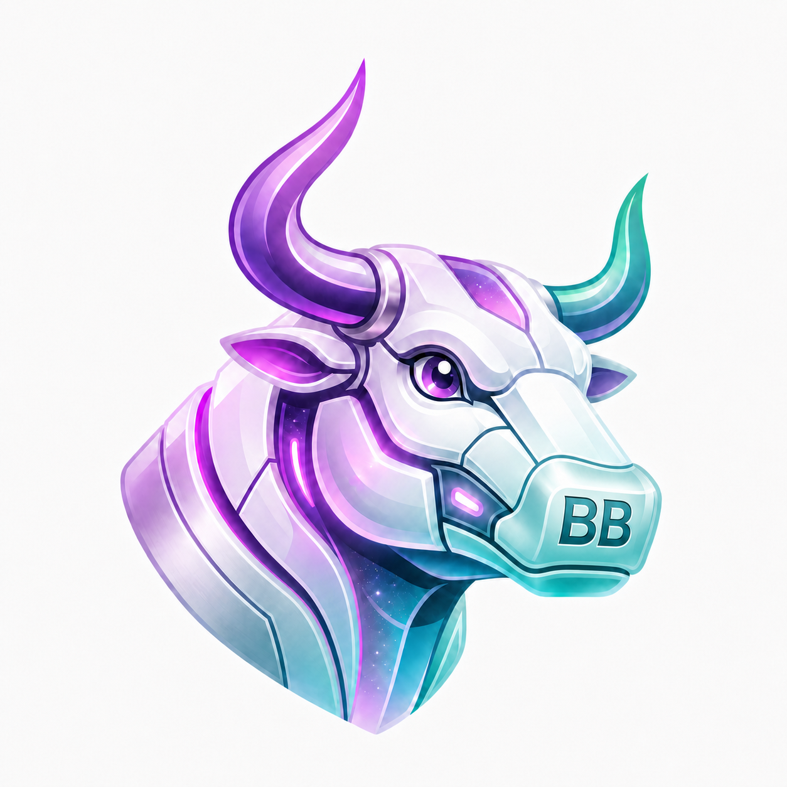

Bot BullsAdvanced Algorithmic Trading Terminal
Connection to AI Backend failed. Please ensure the server is running on port
8000.
Fear & Greed Index
Macro Events
Loading upcoming events...
Market Breadth
--%
Sector Heatmap
Loading Sector HeatMap
My Watchlist
Click to expand
---
---
---
Indicator Signal Confluence
⏳ —
No indicators are turned on, so there are no signals to show. Click an indicator card below to
turn it on. Signals appear after the next refresh.
🤖
BotBulls News AI
GROQ
AI
Select a
ticker to load AI analysis…
Refreshing…